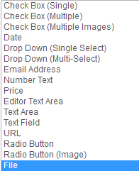
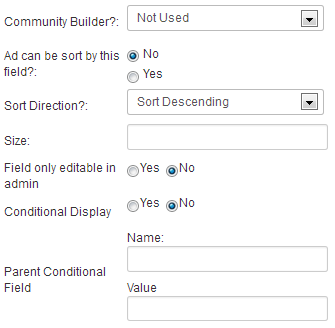

Click on the "Fields" tab in the backend of the component.
You can see all default fields and whether they are required
when writing ads. Below we will see how to add custom fields.
Click on the "New" Button and read details of the form down below.
The available types are shown below
Search options means the field will be used in the search module with SimpleSearch or AdvanceSearch depending on your AdsManager pack. Check out the features documentation for more information.
Use as Profile means this field will be considered as a field in Community Builder.

You can choose whether to use Community Builder or not if
applicable. Everything works fine without Community Builder,
we provide a simple interface to manage profiles of your users.
You can choose to let users to sort your ads by a field if you
select yes and to choose the sorting directon.
Size is the size of the field, such as "50" . You also can
choose whether you allow a field to be editable in the
front-end or not.